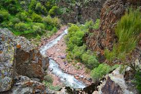
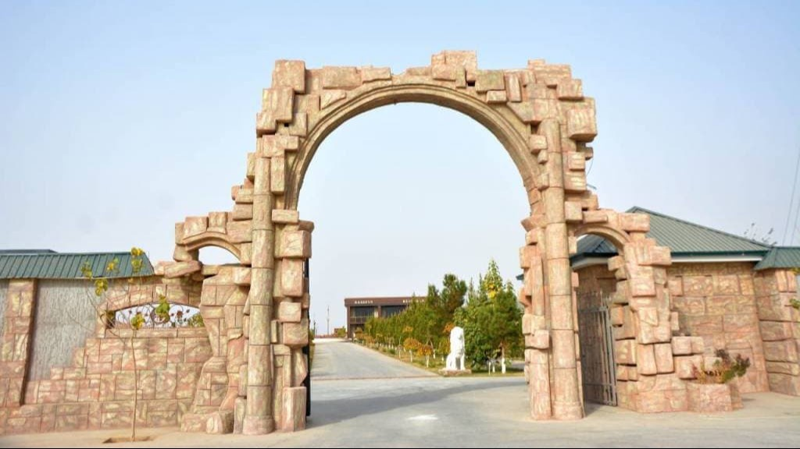

Famous Places

Boysun Reserve

shrine

sangardak sanatorium

camp

omonxona sanatorium

Kohitang Mountains
Sangardak
Sangardak waterfall is located in Sariosia district, 30 km from Denov city. and 205 km from the city of Termiz. located far away. Sariosia district is famous for its inner continental subtropical climate, which creates a unique microclimate in the region. The hills and hills in these places are covered with green vegetation. The Hisar mountain range stretches across the territory of the district, and the Surkhandarya, Topalangdarya, Obizarang and other mountain rivers flow from it.